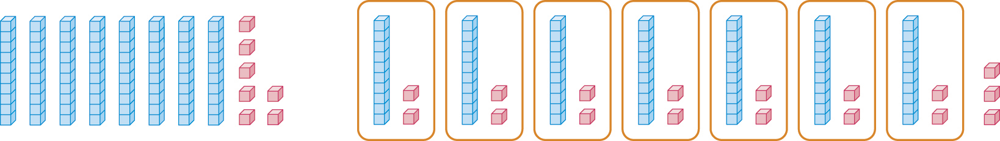

- 문제 1
- 문제 2
- 문제 3
- 문제 4
- 문제 5
- 문제 6
- 문제 7
- 문제 8
- 문제 9
- 문제 10
-
수 모형을 보고 안에 알맞은 수를 써넣으시오.

-
계산해 보시오.
-
끈 97 cm를 8 cm씩 잘라서 리본을 만들려고 합니다.
몇 개의 리본을 만들 수 있고, 몇 cm의 끈이 남는지 구해 보시오.
구해야 할 것
주어진 것
-
한 상자에 20개씩 들어 있는 풀이 30상자 있습니다. 풀은 모두 몇 개인지 구하는 식과 답을 바르게 나타낸 것은 어느 것인지 구하시오.
구해야 할 것
주어진 것
-
컵 67개를 상자에 6개씩 포장하려고 합니다. 상자가 몇 개 필요하고, 컵은 몇 개가 남는지 안에 알맞은 수를 써넣으시오.
-
다음 나눗셈식으로 해결할 수 있는 문제를 만들고, 몫과 나머지를 구해 보시오.
문제
예
59개의 풍선을 3개씩 묶으려고 합니다.
몇 묶음이고, 몇 개가 남나요?
-
나머지가 7이 될 수 있는 나눗셈식을 모두 찾아 써 보시오.
-
3개의 숫자 7, 5, 9 중에서 2개의 숫자로 두 자리 수를 만들고, 그 수를 남은 수로 나누려고 합니다.
나머지가 가장 작게 되는 나눗셈식을 써 보시오.
구해야 할 것
주어진 것
-
한 묶음에 10송이씩 8묶음이 있는 장미를 한 사람에게 7송이씩 나누어 주면
몇 명에게 나누어 줄 수 있고, 몇 송이가 남는지 구해 보시오.
구해야 할 것
주어진 것
답
받을 수 있는 사람의 수는
명이고,
남는 장미는
송이입니다.
-
문제를 바르게 설명한 사람이 누구인지 찾아 이름을 써 보시오.